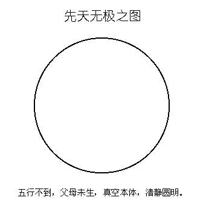
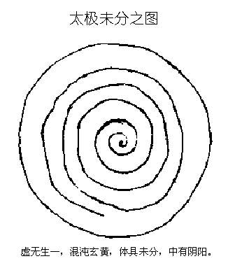
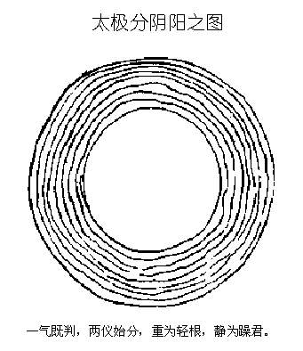
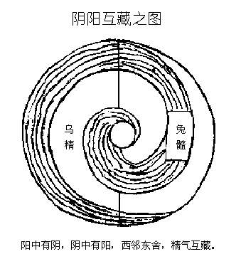
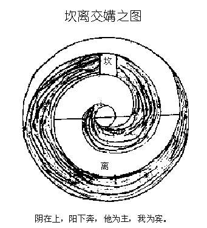
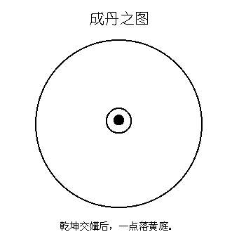
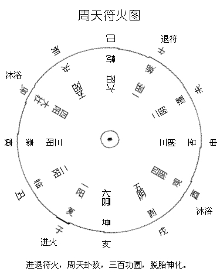
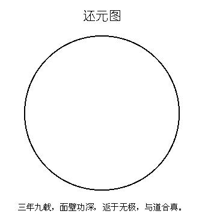

金 丹 大 旨 图
（明）陆 西星
序
古仙丹法，载之丹经，无下千帙。读之则愈烦愈难，悟之则惟简惟易。大要观天之道，执天之行，则二者其尽之矣。一阴一阳，配合以两者，天之道也；日月运行，昼夜交光者，天之行也。《契》曰：“天地设位，而易行乎其中矣。”易谓离坎是也。圣人知其如此，故尝准之以作丹法。是故以乾坤为鼎器，以乌免为药材。而其中消息盈虚之数，则又准之以为火候阴符。《经》云：‘日月有数，大小有定，圣功生焉，神明出焉。’又总而言之，则曰盗机逆用尽之矣。是道边，言之不能尽，佰之不可得。若也逢师得诀，针芥相投，则可言下而领。大患人无慧性，不能洞晓深达，以故求之愈远。又或摇以似是之非，主以先入之说，则毒药熏心，鲸墨入骨，吾未如之何也已。予生幸以空空鄙夫，遭际圣师，提挈年久，赖寸天不障，忽睹堂室，乃知今世之遇，干古希觏也。四方闻道之士，谓某可教，各以师授参互考订，比予所闻，率多枘凿。匪道有异同，户牖自别故也。老子云：“大道甚夷，而民好径。”金丹之道，至易至简，有所安排布置，则涉邪伪而非自然。故某所图述，根极化原，直指命术，举纲说约，大义昭然。要在不背于师旨，别为破论，以辟邪宗。若乃好道之伦，玩索而有得焉，或可尽性命而不惑于多歧之谬乎！岁在庚午嘉平月，下浣潜虚子书于南沙之西禅精舍。
先 天 无 极 之 图

老子云；“有物混成，先天地生。吾不知其名，强名曰道。”又曰：“无名，天地之始。”又曰：“天下有始，以为天下母。”盖先天混元真乙之气，为生天生地、生人生物之根方。其未有动机，故溟滓无光，声奥俱泯，谓之无极。在人则至静无感，寂然不动者当之。而佛氏所谓真空，儒者所谓末发，亦不外是老子云“常无欲以观其妙”，《易・系辞》云“圣人以此洗心退藏于密”，《圆觉经》云“惟取极静由静力”。故永断烦恼，竞究成就，不起于坐，便入涅��。三教圣人同一宗旨，但作用不同，故有三者之别耳。
太 极 未 分 之 图

《悟真篇》云：“道自虚无生一气，便从一气产阴阳。”极者，阴阳体具末分之象也。老子云：“道生一。”一即太极也，其在吾人，是谓玄牝。盖玄牝者，乃真精妙合自然而成。所谓无中生有，虚里造实，乃神气之根，而性命之窍也。老子云：“尝有欲以观其徼。”观徼之学，遂为千古圣真立命之基，而圣功于是乎生，神明于是乎出矣。
太 极 分 阴 阳 之 图

老子云：“道生一，一生二。”是太极分两仪也。两仪分，则天包地外，地处天中，而阴中有阳、阳中有阴之妙寓于其中矣。何者？自虚无而生一气，是静极而动，阴中之阳也；两仪分而天包地外，地处天中，是动以涵静，阳中之阴也。邵子云：“阴阳之精，互藏其宅。”故丹法阴中用阳，阳中用阴，而尝以静为主焉。老子云：“重为轻根，静为躁君。”盖能静，是谓抱元守一而可以复归于无极矣。
阴 阳 互 藏 之 图

天地既判，日月运行，照耀交光，而造化生焉。日月者，天地阴阳之精也。于卦则为离坎。离中之阴，是谓乌精；坎中之阳，是谓兔髓。丹法以乌兔为药物，故阴中用阳，阳中用阴。所谓东入西邻，西归东舍，不过识互藏之精，盗其机而逆用之耳。
坎 离 交 媾 之 图

古仙造丹，莫要于采药。而药物有铢两，采取有时节，颠倒有法度。其要在于月出初庚，铅生癸后，而子南午北，互为纲纪，别有口诀，不著于文。
成 丹 之 图

《悟真篇》云：“虎跃龙腾风浪粗，中央正位产玄珠。”又云：“药逢气类方呈象，道在希夷合自然。”要知此中一点，不谓之铅，不谓之汞，而谓之丹者，乃日月交光，阴阳和气，自然而成。故丹之为字，象日象月。
《心印经》云：“丹在身中，非白非青。”盖以为青龙白虎，则尚属之两家，既归身中，则混合为一矣。故云非白非育也。或问：“何谓金液还丹？”曰：“以其既失而复得，谓之曰还。以其采取水中之金，合经己汞而成，故曰金液。”
周 天 符 火 图

此中得意须忘象，若究群爻漫役情。
还 元 图

功夫到此，一句说不得，一字用不着。